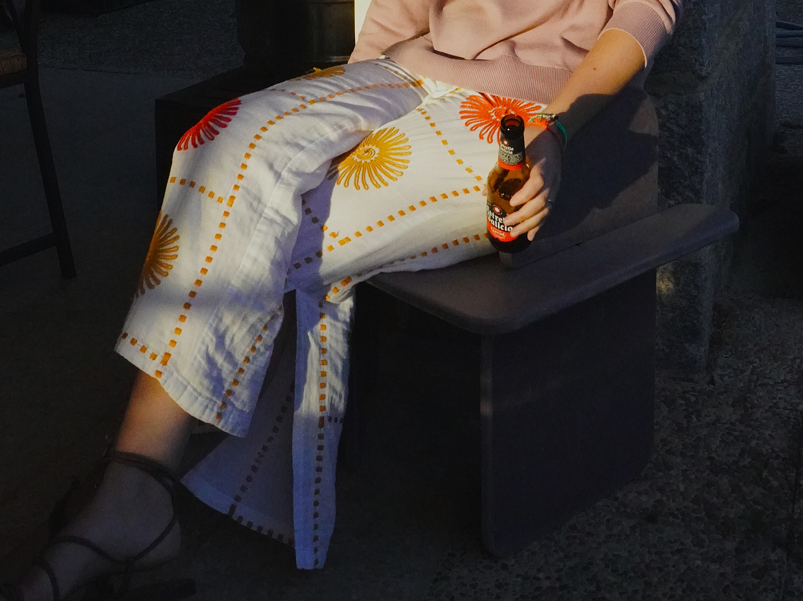
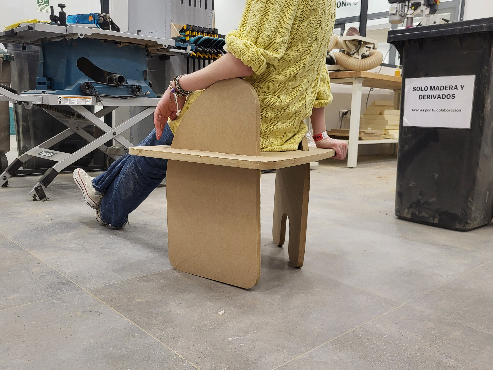
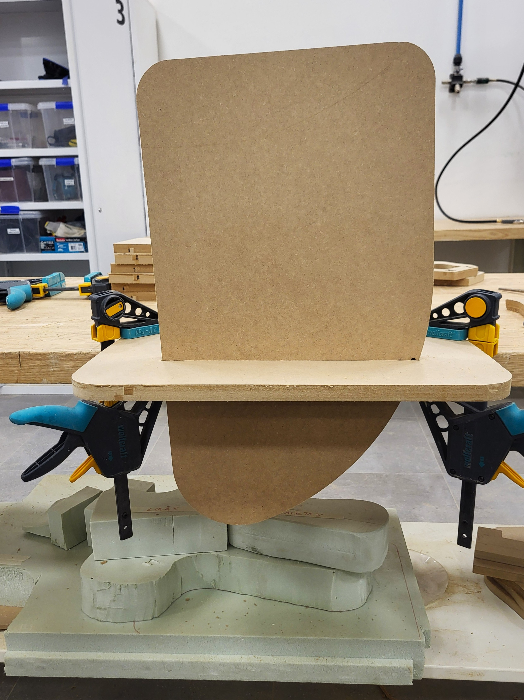
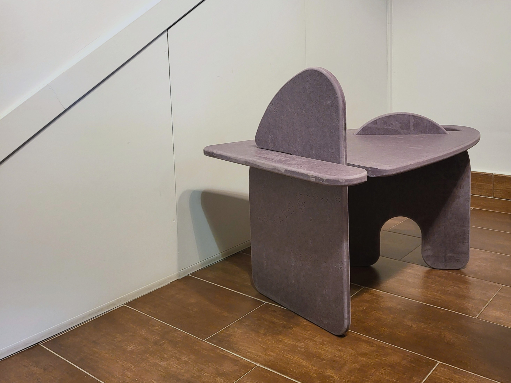
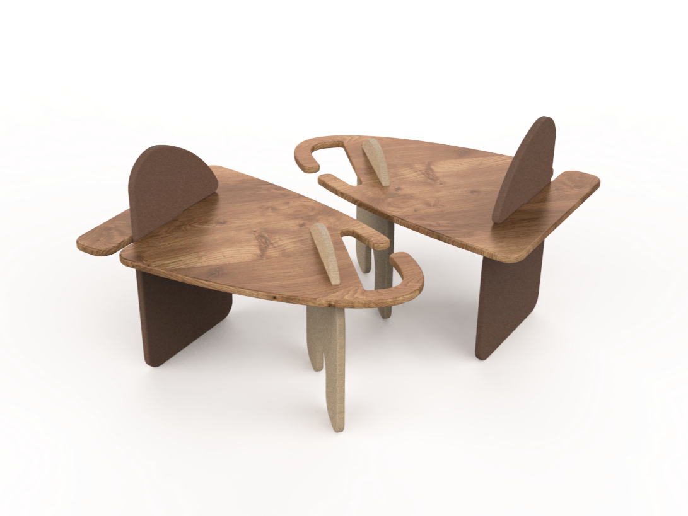
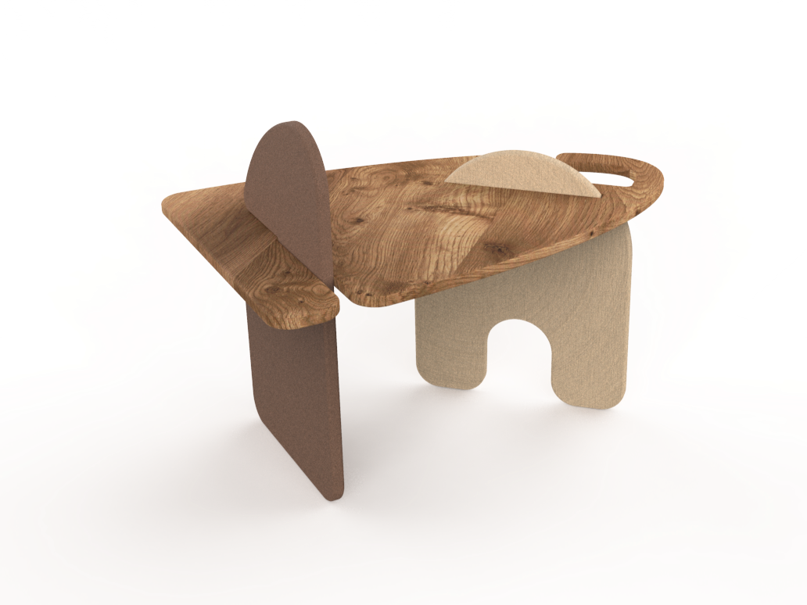

.02 Ragaire
.reto
Diseñar un asiento:
- Transportable
- Máximo cuatro piezas
- MDF de 10mm
- Que cuente una historia
.3 partes, 3 historias
La aleta simboliza la acción, es donde apoyas tu brazo, así como el amigo es apoyo y compañero de tus ideas y pensamientos.
La conversación es un puente a la amistad y el conocimiento. Consiste en una ayuda por el camino de la vida.
Los focos son el sujeto (la persona) de la acción (conversación). Cada idea/pensamiento (punto) rodea a las personas que hablan, con o sin palabras.












.proceso
Comencé el proceso pensando en la historia que quería contar. Después, probé formas y estructuras firmes para el taburete.